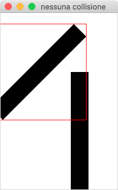
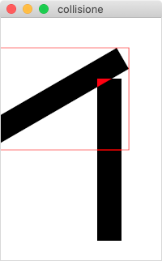

Se volessimo creare un gioco? Quali sono le informazioni di base che ci serve di sapere? Per cominciare possiamo considerarne due: spostare gli oggetti e capire quando questi si toccano.
Oggetti a posizioni precise
È possibile sistemare gli oggetti in posizioni determinate da coordinate piuttosto
che da una griglia: utilizzando
javafx.scene.layout.Pane
è possibile impostare le coordinate X-Y dei singoli elementi figli.
A questo elemento possono essere aggiunti quanti figli si vuole in questo modo:
pannello.getChildren().add( oggetto );
In generale è poi possibile impostare la posizione di un elemento come un pulsante o una etichetta... quello che ci interessa in questo caso sono però degli oggetti grafici.
Forme geometriche e immagini
In un pannello oltre che controlli come i pulsanti si possono aggiungere anche figure geometriche
o immagini a posizioni precise, gli oggetti Circle, Rectangle,
Polygon e ImageView servono appunto a questo, ciacuno di questi oggetti
ha un modo per impostare la sua posizione (ad esempio setCenterX() per Circle
o setX per il rettangolo) oppure è possibile utilizzare setTranslateX() e setTranslateY()
che sono due metodi disponibili per tutti gli oggetti di questo genere.
L'esempio in questa pagina usa ad esempio setX(), per esecizio prova a togliere
questo tipo di impostazioni e usa invece setTranslateX() e setTranslateY().
L'oggetto Image permette di gestire immagini sia in formato jpeg che png (con trasparenze)
e gif (anche animato).
import javafx.application.Application;
import javafx.scene.Scene;
import javafx.scene.image.Image;
import javafx.scene.image.ImageView;
import javafx.scene.layout.Pane;
import javafx.scene.paint.Color;
import javafx.scene.shape.Circle;
import javafx.scene.shape.Polygon;
import javafx.scene.shape.Rectangle;
import javafx.stage.Stage;
public class Oggetti extends Application {
public static void main(String[] args) {
launch(args);
}
@Override
public void start(Stage primaryStage) throws Exception {
Pane areaDiGioco = new Pane();
areaDiGioco.setPrefSize(300, 300);
Rectangle rettangolo = new Rectangle(50,100); // 50 è la larghezza e 100 l'altezza
rettangolo.setX(200);
rettangolo.setY(10);
rettangolo.setFill(Color.RED);
areaDiGioco.getChildren().add(rettangolo);
Circle cerchio = new Circle(20); // 20 è il raggio
cerchio.setCenterX(100);
cerchio.setCenterY(200);
cerchio.setFill( Color.GREEN );
areaDiGioco.getChildren().add(cerchio);
Polygon poligono = new Polygon(100,100,50,50,50,100); // x,y di ogni vertice
poligono.setFill(Color.YELLOW);
areaDiGioco.getChildren().add(poligono);
Image iBase = new Image(getClass().getResourceAsStream("asteroide.gif"));
ImageView asteroide = new ImageView(iBase);
asteroide.setPreserveRatio(true);
asteroide.setFitWidth(40);
areaDiGioco.getChildren().add(asteroide);
Scene scena = new Scene(areaDiGioco);
primaryStage.setScene(scena);
primaryStage.setTitle("L1");
primaryStage.show();
}
}
Movimento orizzontale
La realtà è che gli oggetti non si muovono da soli... dobbiamo spostarli noi un po' alla volta e dare l'illusione che si muovano fluidamente. Generare questo tipo di illusione non è difficile basta fare molto frequentemente (almeno una ventina di volte al secondo) dei piccoli spostamenti.
Per fare un lavoro qualsiasi diciamo 40 volte al secondo possiamo usare un Timer e ogni volta sche questo scade porto la pallina un pixel più avanti.
Questa volta per posizionare la pallina usiamo la proprietà translate al posto di center!
mostra codice
import javafx.animation.KeyFrame;
import javafx.animation.Timeline;
import javafx.application.Application;
import javafx.scene.Scene;
import javafx.scene.layout.Pane;
import javafx.scene.paint.Color;
import javafx.scene.shape.Circle;
import javafx.stage.Stage;
import javafx.util.Duration;
public class MovimentoOrizzontale extends Application {
public static void main(String[] args) {
launch(args);
}
Pane areaDiGioco = new Pane();
Circle pallina = new Circle(20);
double pallinaX;
@Override
public void start(Stage primaryStage) throws Exception {
areaDiGioco.setPrefSize(200, 80);
pallina.setFill(Color.RED);
pallinaX = 20;
pallina.setTranslateX(pallinaX);
pallina.setTranslateY(40);
areaDiGioco.getChildren().add(pallina);
Scene scena = new Scene(areaDiGioco);
primaryStage.setScene(scena);
primaryStage.setTitle("L1");
primaryStage.show();
Timeline timeline = new Timeline(new KeyFrame(
Duration.seconds(0.025), // ogni quanto va chiamata la funzione
x -> spostaPallina())
);
timeline.setCycleCount(Timeline.INDEFINITE);
timeline.play();
}
private void spostaPallina() {
pallinaX++;
pallina.setTranslateX(pallinaX);
}
}
Rimbalzo
Se spostiamo la pallina sempre più avanti lungo l'asse X ad un certo punto esce dalla finestra. Sarebbe più interessante se rimbalzasse tornando indietro! Ovviamente non lo fa in automatico ma non è neanche troppo difficile da fare.
L'idea è questa: all'inizio mando la pallina verso destra (incremento di 1 la posizione), quando la posizione è tale per cui la pallina tocca il bordo la rimando indietro (l'invremento diventa -1 ), e viceversa quando tocca il bordo sinistro.
mostra codice
import javafx.animation.KeyFrame;
import javafx.animation.Timeline;
import javafx.application.Application;
import javafx.scene.Scene;
import javafx.scene.layout.Pane;
import javafx.scene.paint.Color;
import javafx.scene.shape.Circle;
import javafx.stage.Stage;
import javafx.util.Duration;
public class RimbalzoOrizzontale extends Application {
public static void main(String[] args) {
launch(args);
}
Pane areaDiGioco = new Pane();
Circle pallina = new Circle(20);
double pallinaX;
double incremento = 1.0;
@Override
public void start(Stage primaryStage) throws Exception {
areaDiGioco.setPrefSize(200, 80);
pallina.setFill(Color.RED);
pallinaX = 20;
pallina.setCenterX(pallinaX);
pallina.setCenterY(40);
areaDiGioco.getChildren().add(pallina);
Scene scena = new Scene(areaDiGioco);
primaryStage.setScene(scena);
primaryStage.setTitle("CD");
primaryStage.show();
Timeline timeline = new Timeline(new KeyFrame(
Duration.seconds(0.025), // ogni quanto va chiamata la funzione
x -> spostaPallina()));
timeline.setCycleCount(Timeline.INDEFINITE);
timeline.play();
}
boolean avanti=true;
private void spostaPallina() {
pallinaX = pallinaX + incremento;
// 20 è il raggio della pallina
if (pallinaX >= 200-20) {
incremento = -1.0;
}
if (pallinaX <= 20) {
incremento = 1.0;
}
pallina.setCenterX(pallinaX);
}
}
Collisione

Solitamente in un gioco serve di rilevare la collisione tra due oggetti... ad esempio un dardo contro il suo bersaglio in movimento.
La buona notizia è che è facile rilevare una approssimazione della collisione, la brutta è che l'approssimazione non è molto precisa ma per oggetti piccoli questo non si nota! L'immagine a sinistra mostra il caso pessimo di due immagini uguali: quella sulla sinistra è stata ruotata di 45°, il calcolo della collisione avviene sul rettangolo di ingombro (in rosso) quindi risulta che le due barre collidono.
mostra codice
import javafx.application.Application;
import javafx.geometry.Bounds;
import javafx.scene.Scene;
import javafx.scene.image.Image;
import javafx.scene.image.ImageView;
import javafx.scene.layout.Pane;
import javafx.scene.paint.Color;
import javafx.scene.shape.Rectangle;
import javafx.stage.Stage;
public class Collisione extends Application {
public static void main(String[] args) {
launch(args);
}
@Override
public void start(Stage primaryStage) throws Exception {
Pane areaDiGioco = new Pane();
areaDiGioco.setPrefSize(500, 500);
Image iBase = new Image(getClass().getResourceAsStream("linea.png"));
ImageView linea1 = new ImageView(iBase);
linea1.setRotate(45);
linea1.setTranslateX(50);
linea1.setPreserveRatio(true);
areaDiGioco.getChildren().add(linea1);
ImageView linea2 = new ImageView(iBase);
linea2.setPreserveRatio(true);
areaDiGioco.getChildren().add( linea2 );
linea2.setX(120);
linea2.setY(100);
Bounds b1 = linea1.getBoundsInParent();
Bounds b2 = linea2.getBoundsInParent();
if(b1.intersects(b2)) {
primaryStage.setTitle("collisione");
}else {
primaryStage.setTitle("tutto ok");
}
Scene scena = new Scene(areaDiGioco);
primaryStage.setScene(scena);
primaryStage.show();
}
}
Collisione per intersezione


Quando è necessario rilevare una collisione in modo più preciso si può usare una strada diversa: Faccio calcolare a javafx un oggetto formato dall'intersezione tra due forme, se questo ha dimensione diversa da -1 allora vuol dire che esiste una sovrapposizione (quindi una collisione) altrimenti gli oggetti non si toccano.
Nella figura qui a fianco l'angolo rosso evidenzia l'area sovrapposta.
Due aspetti negativi: è più lenta di quella sui bounding box e non funziona sulle immagini (però con un po' di fantasia...).
mostra codice
import javafx.application.Application;
import javafx.geometry.Bounds;
import javafx.scene.Scene;
import javafx.scene.layout.Pane;
import javafx.scene.paint.Color;
import javafx.scene.shape.Rectangle;
import javafx.scene.shape.Shape;
import javafx.stage.Stage;
public class CollisionePerIntersezione extends Application {
public static void main(String[] args) {
launch(args);
}
@Override
public void start(Stage primaryStage) throws Exception {
Pane areaDiGioco = new Pane();
areaDiGioco.setPrefSize(200, 300);
Rectangle linea1 = new Rectangle(30,200);
linea1.setRotate(60);
linea1.setX(50);
areaDiGioco.getChildren().add(linea1);
Rectangle linea2 = new Rectangle(30,200);
areaDiGioco.getChildren().add( linea2 );
linea2.setX(120);
linea2.setY(75);
Scene scena = new Scene(areaDiGioco);
primaryStage.setScene(scena);
primaryStage.show();
Shape intersect = Shape.intersect(linea1, linea2);
if (intersect.getBoundsInLocal().getWidth() != -1){
primaryStage.setTitle("collisione");
}else {
primaryStage.setTitle("nessuna collisione");
}
}
}